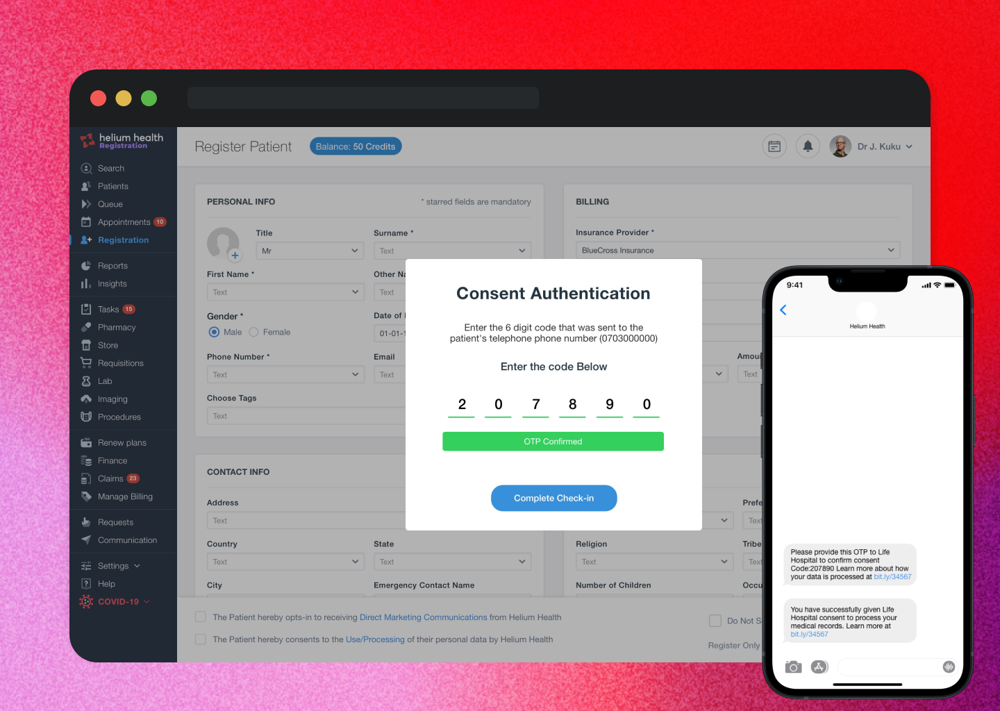
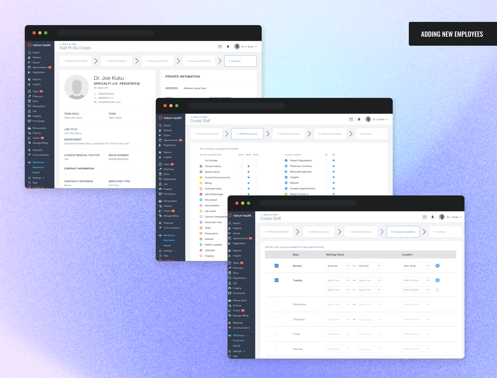
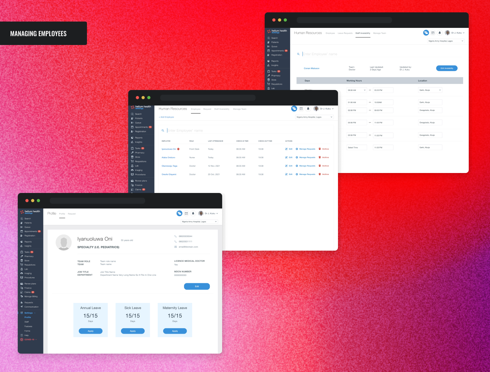
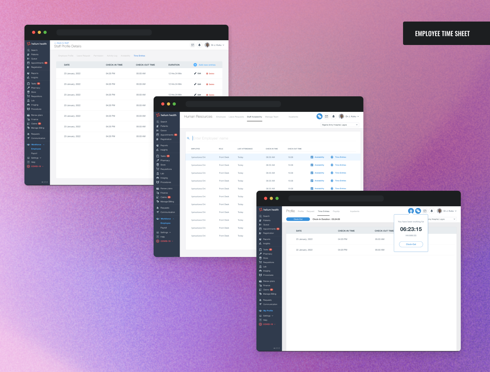

Helium Health — the EMR powering West Africa's healthcare system.
Led design on Helium OS, the flagship EMR/HMIS platform, driving expansion into the Middle East and growth across Nigeria and East Africa.

Helium Health rapidly digitizes hospitals and clinics with its EMR/HMIS product — extending into telemedicine, provider financing, claims processing for payers, and epidemiological data for partners.
Now West Africa's leading healthcare technology provider, Helium Health facilitates hundreds of thousands of medical interactions monthly. As Senior Product Designer, I led design for Helium OS — the platform that catalyzed the company's expansion into the Middle East and continued growth across Nigeria and East Africa.
Enabling interoperability across Helium's products meant solving a hard problem: transferring data securely across products and organizations while keeping patient consent at the center.
House the patient data. The design had to enable smooth extraction and transfer while respecting privacy and confidentiality.
Needed the power to authorize use of their own data across Helium's product spectrum — a user-centric consent flow.

Healthcare professionals are also employees of an organization. We embedded a full HRIS system inside Helium OS — onboarding, leave, payroll, availability, and check-ins for doctors, nurses, and staff — so facilities manage people and patients in one place instead of juggling separate software.



To strengthen clinical decision-making, we built a system that proactively alerts clinicians to potential interactions between diagnoses, prescribed medications, and patient allergies — surfacing complications before they become treatment errors.